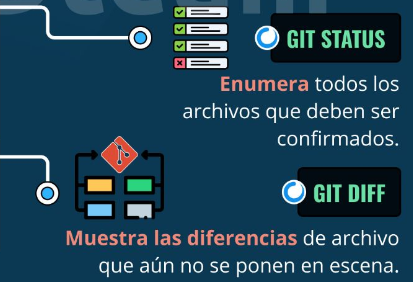

Ir a carrito de compras
Git Bash es una interfaz de línea de comandos que proporciona un entorno tipo Unix en sistemas Windows, permitiendo ejecutar comandos de Git y usar herramientas comunes de sistemas operativos basados en Linux. Su principal propósito es facilitar el uso de Git, el sistema de control de versiones, pero también permite ejecutar otros comandos como ls, cd, y rm, entre otros.
Comandos más comunes
